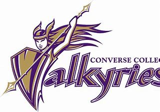

Join Dr. Doug Jensen and Dr. Doug Bush for a January study-travel that perfectly balances experiencing the amazing beauty of southern Mexico while respecting its diverse indigenous and modern cultures. And earn Spanish, Biology, non-lab science GEP, non-Western credit while you do it! Info session in Lever Auditorium, Tuesday March 8 @ noon.
The Converse University Volleyball team is holding a Pizza Inn Fundraiser this coming Thursday night from 6:00 p.m. - 9:00 p.m. at the Pizza Inn in Hillcrest! Come out and grab pizza and support your volleyball team!!
It’s time to announce the task for Round One of our 2nd Annual Career Madness Competition! Each Task is worth one point and can be completed any time before March 27th. The undergraduate student who obtains the most points by March 27th will win the GRAND PRIZE: $200 value headphones of your choosing! All tasks completed before March 13th will count as entries into the weekly raffle! (one entry per task)
Come out on Monday and Tuesday to Carolina Country Club to cheer on the golf team in the 10th annual Converse Spring Invite presented by Founders FCU! The rounds will last from 9 a.m. - 4 p.m. on both days with awards being presented after the final round on Tuesday afternoon.
The Petrie School of Music presents “In This Fateful Hour,” a recital by professor Kelly Vaneman, oboe, with Steven Graff, piano; Chris Vaneman, flute; and the Converse Chorale, directed by Keith Jones. Featuring works by Francis Poulenc, Benjamin Britten, Brian DuFord, Alyssa Morris, and Kelly Vaneman, each piece on the program was written by a composer as a way of coming to terms with a “fateful hour.” This event is free and open to the public, and also available via live stream on Thursday, March 10, 7:30 pm, Daniel Recital Hall.
You don't want to miss this! “Spartanburg favorite, Marshall Chapman presents the best of Nashville – Will Kimbrough and Tommy Womack for an evening of songs and stories in the historic Twichell Auditorium at Converse University. “Tommy and Will are as brilliant as it gets as far as present-day Nashville,” Marshall says. “This will be my favorite show of the year, for sure. A night to remember!” Arrive early to enjoy live music beginning at 5 pm. Cold beer will also be available for purchase until 6:30 p.m. Doors open at 6 p.m. The show starts at 7 p.m. Tickets will sell fast, so purchase your tickets today through the Converse Box Office.
| Sport | Date | Home or Away |
|---|---|---|
| Softball | 3/16/22 | Away |
| Lacrosse | 3/20/22 | Home |
| Track and Field | 3/24/22 | Away |
*Converse athletes are proud NCAA Division II student athletes that are represented by our mascot: The mighty Valkyrie!
Converse University atheltics just recently added a few new teams! We added a Men's track and field team, basketball team, Esports team and soccer team.
Converse students are also fueled everyday by: Gee Dining Hall and Freshens Cafe